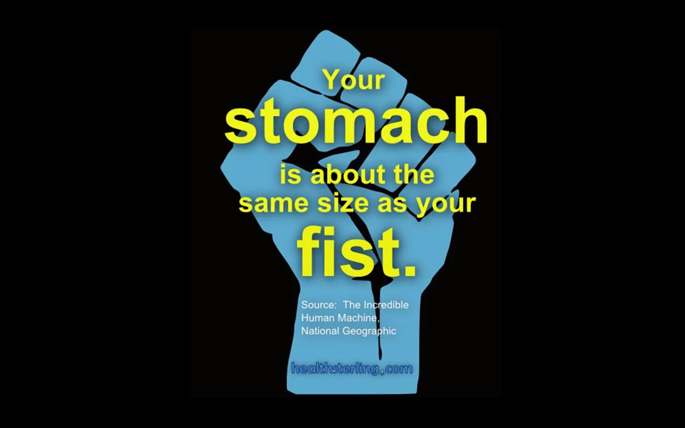

Blog · October 10, 2011
Infographic series on the human body
The human body fascinates me. It is beautiful that I am a biochemical system standing here thinking about how I exist. I think a lot of things about the body are fantastic, so I’ve started creatively conveying things that make me think “wow.” Here are the latest visualizations from my professional playing with Inkscapes through Sterling Health‘s Body 101 series on visualizing.org.

Your body is amazing. Over 650 skeletal muscles working together yield your bilaterally symmetrical biological frame, composed functionally of 325 working pairs of muscles and over 187 joints. How many can you feel?
I’m at about 150, up from just 100 a couple months ago. Yoga and other exercise activities that simultaneously strengthen and stretch your muscular system (including ligaments and tendons) enhance not only your posture and strength but also promote innervation and viscularization of tissue. Here’s another serving of Body 101 a la carte: during the first couple weeks of exercising a new muscle, much of the improvement is acually increased efficiency of the nervous system to communicate with muscular fibers and cells (source: hamill and knutzen, the biomechanical basis of human movement). View on visualizing.org.

It can take up to 20 minutes for the chemicals that tell your body that you are hungry to be reabsorbed and replaced by those that signal fullness. This is why doctors recommend you stop eating when you are satiated, rather than full.


Food for thought next time your belly is on your mind. View on visualizing.org

What are you? While philosophically this varies, biologically, you are a series of chemical reactions. The mighty brain is the end goal of your body: facilitating the growth of new neural connections and firing along those synapses that already exist. This “connectome” essentially IS you. Your brain never stops growing as long as you continually explore new things, challenge yourself with varied ideas, and think abstractly about how and who you are. I hope you remember every day how intricately complex and mindbogglingly beautiful it is that you are alive. View on visualizing.org.
—
Designers, email me amy at healthsterling.com to take part in the Body 101 project: visualizing the human machine on healthsterling.com.
First published on my old blog, amyrobinson.wordpress.com, October 10, 2011.